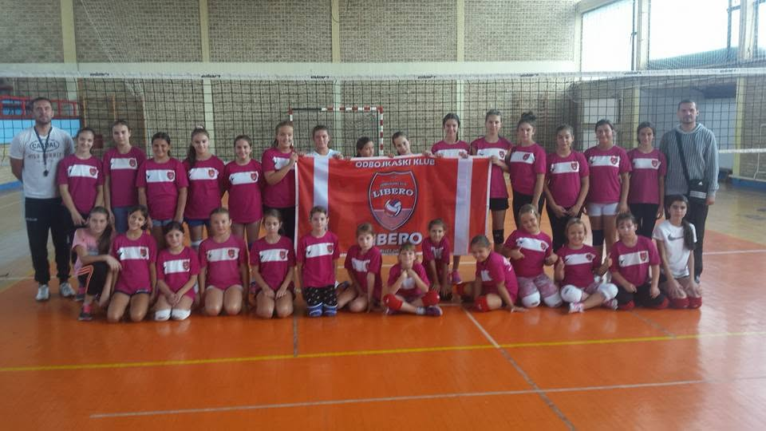
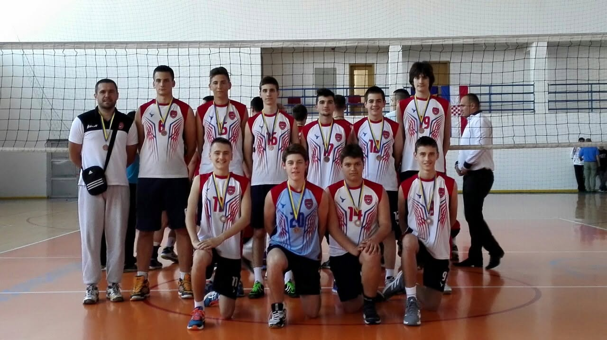
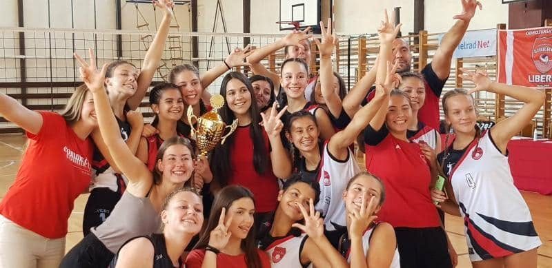
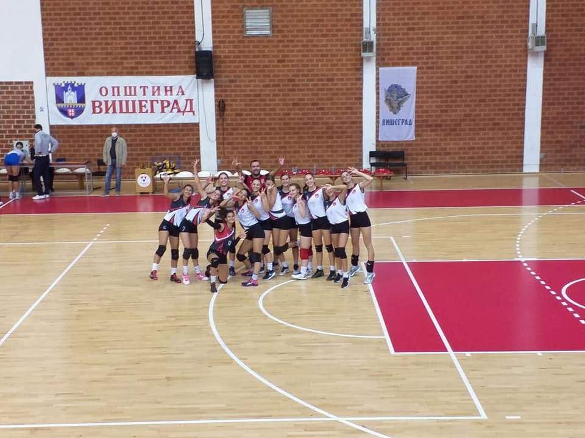
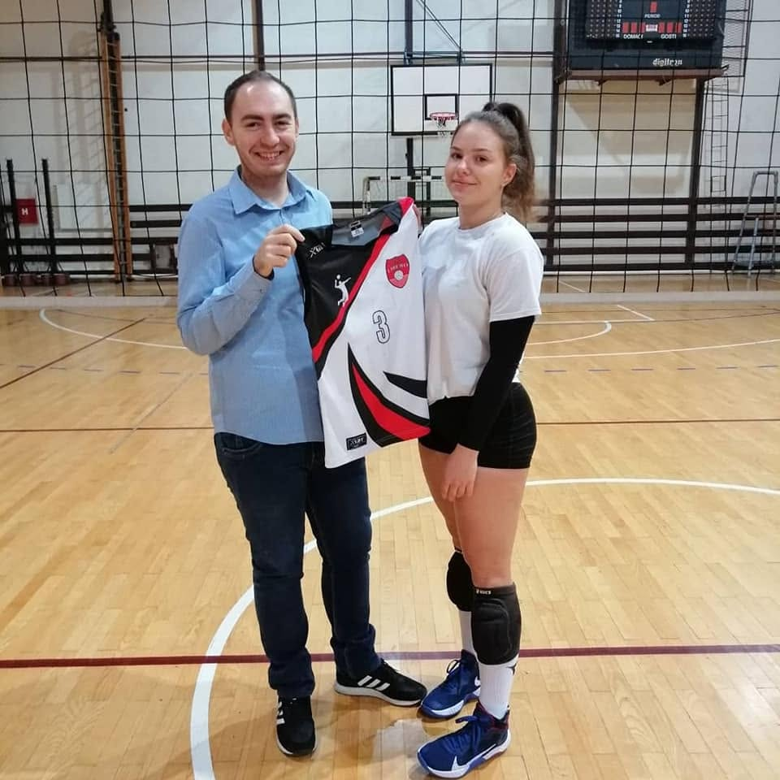
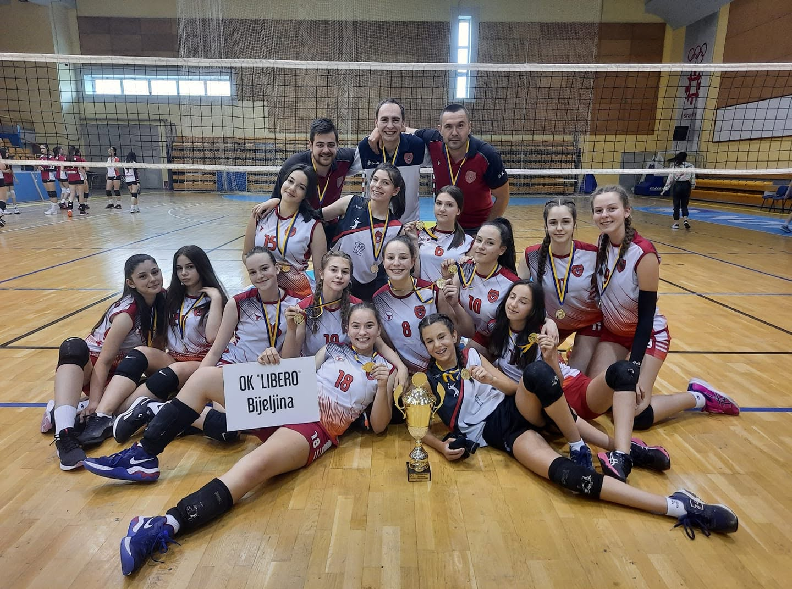
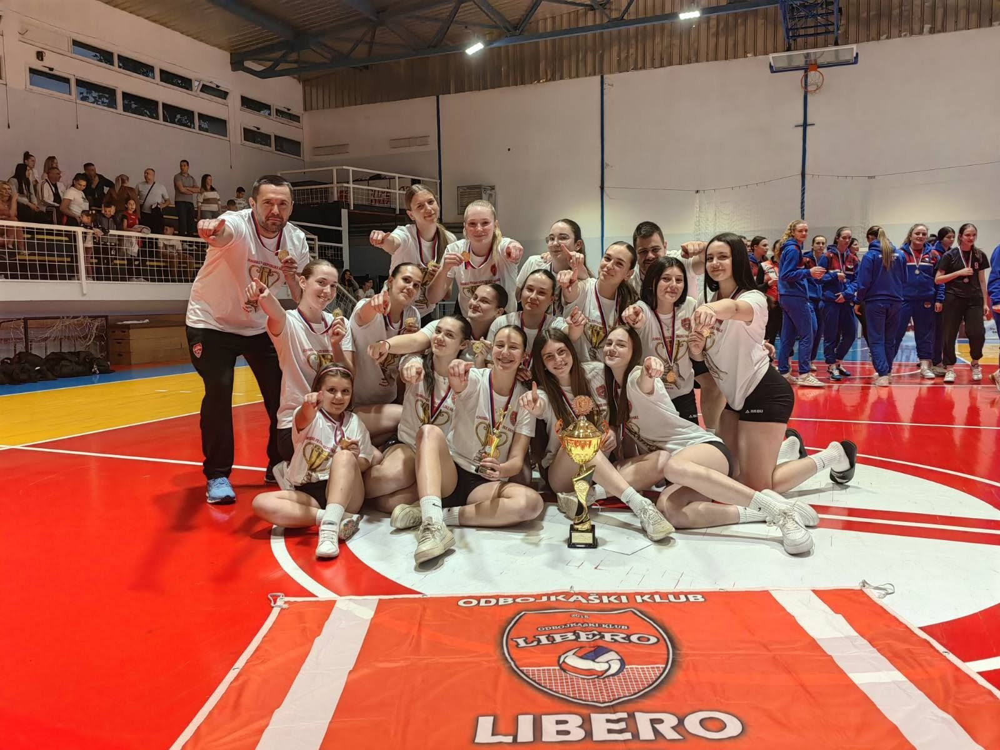
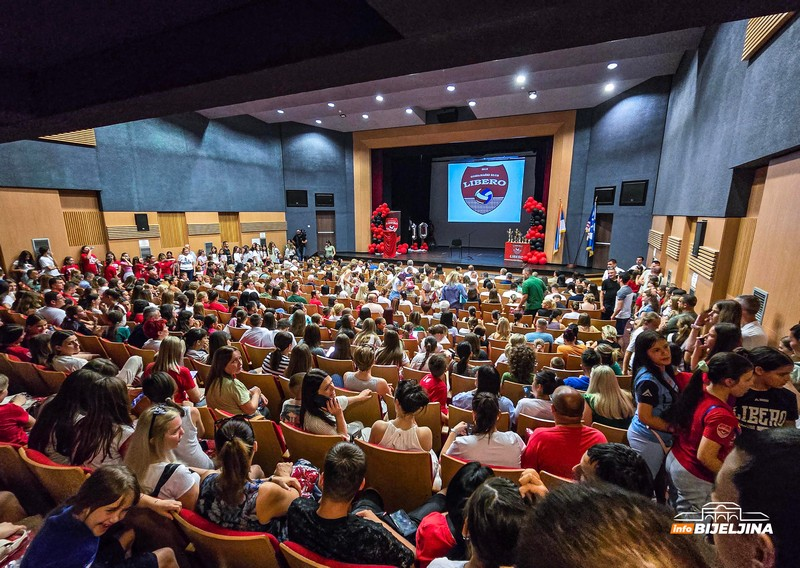

Odbojkaški klub Libero osnovan je sa jednom zajedničkom strašću — ljubavlju prema odbojci i željom da se taj sport dovede u Bijeljinu na viši nivo. Deset godina kasnije, klub broji više od 300 članova i stoji ponosno rame uz rame sa najvećim klubovima u Republici Srpskoj.
Klub osnovan početkom 2015. od grupe entuzijasta na čelu sa braćom Bojanom i Jovanom Kvrgićem. Počelo se od nule, bez mnogo resursa, ali sa velikom voljom. Prve igračice i igrači počeli su trenirati u školskim salama Bijeljine. Ovo je bio samo početak jedne velike priče.

Klub brzo raste i postaje jedan od najbrojnijih sportskih kolektiva u Republici Srpskoj po članstvu. Mlađe kategorije počinju osvajati prva odličja na republičkim takmičenjima. Entuzijazam osnivača prelazi u ozbiljan sportski projekat.

Seniorska ženska selekcija ostvaruje istorijski uspjeh 2020. godine i pobjedom u završnici druge lige RS protiv ekipe OK "Borac" iz Banjaluke ulazi u prvu ligu RS u kojoj se takmiči i danas.

Seniorska ženska selekcija ostvaruje prvu pobjedu u okviru prvog kola Prve lige RS rezultatom 3:0 protiv ekipe OK "HE na Drini" Višegrad, čime počinje dominacija ove zlatne generacije koja će u narednih nekoliko godina držati vrh same tabele.

Klub ostvaruje prvi transfer u istoriji kluba, potpisivanjem mlade odbojkašice Jovane Tojić. Jovana dolazi iz rivalskog kluba OK "Radnik" iz Bijeljine i u klubu ostaje do 2022. godine.

Pionirska selekcija ostvaruje nevjerovatan uspijeh u sezoni 2020/2021. Nakon što prvi put u svojoj konkurenciji osvajaju Pionirsku ligu RS, ubrzo postaju šampionke na državnoj završnici BiH. Sezonu zaokružuju osvajanjem Igara mladih na nivou BiH u Sarajevu, gdje će naredne sezone odbraniti titulu.

Istorijska sezona za klub u kojoj su ostvarene mnogobrojne pobjede i uspjesi. Seniorska selekcija dolazi po prvi put do vrha tabele Prve lige RS gdje zauzima drugo mjesto nakon završnice protiv ekipe OK "Radnik". Kadetska selekcija postaje vicešampion RS a kasnije osvaja treće mjesto na državnoj završnici BiH. Pionirska selekcija osvaja treće mjesto na igrama mladih, dok čitavu priču zaokružuje juniorska ekipa koja osvaja prvo mjesto na Juniorskom prvenstvu RS.

U velikoj sali Centra za kulturu Semberija u Bijeljini održana je svečana manifestacija pod nazivom "Naših prvih 10". Veče je okupilo članove, roditelje, trenere i prijatelje kluba. Libero danas broji preko 300 članova u svim uzrasnim kategorijama i stoji ponosno pored klubova duže tradicije.
